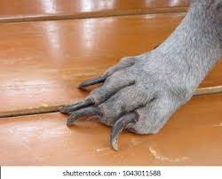

Why should I cut my dogs nails?
Not cutting your dog's nails can lead to them developing arthritus. Dog's nails grow in a curved shape, so if they are not trimmed, the claws will eventually start to dig into the dog's skin.
Longer nails are also much more likely to snag onto fabrics, which can lead to the nail breaking, which leaves the nail susceptible to infections.
